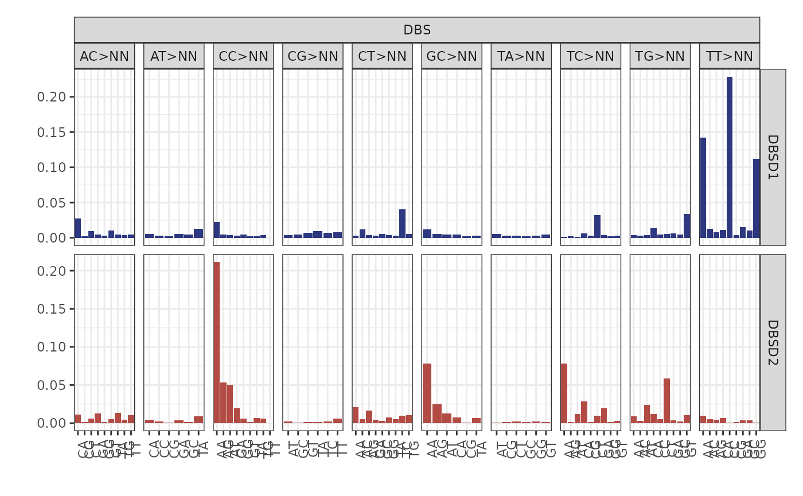
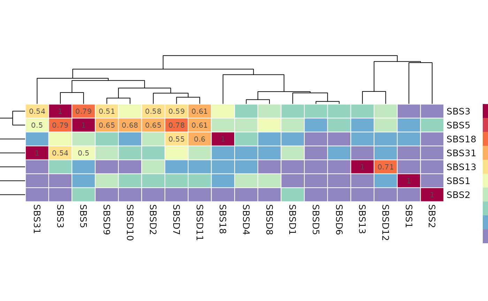

Fit on real data
Fit_breast_data.RmdPackage setup
knitr::opts_chunk$set(warning = FALSE, message = FALSE)
configure_environment(envname="bascule-env", use_default=TRUE)
py = reticulate::import("pybascule")Fit the model
Here, we load the breast tumor type fit object
(breast_data) from the bascule package, and retrieve the
input data (counts) from the loaded fit object.
We execute the fit function using the input data
(counts).
De novo signatures refinement
Here, we eliminate all inferred de novo signatures that are explainable with linear combination of the other signatures.
x_refined = refine_denovo_signatures(x_pre_refinement)Patients clustering
We redo the clustering step (if applicable), using the new set of the signatures and updated exposure matrix.
x = fit_clustering(
x_pre_refinement,
cluster=15,
seed_list=c(19,255,18321,331),
hyperparameters=list("penalty_scale"=0, "alpha_conc"=alpha_conc),
store_fits=TRUE,
py=py,
CUDA=TRUE,
autoguide=TRUE
)
x = x %>% merge_clusters()Visualisation of the results
Exposures matrix
plot_exposures(x)
#> Scale for fill is already present.
#> Adding another scale for fill, which will replace the existing scale.
#> Scale for fill is already present.
#> Adding another scale for fill, which will replace the existing scale.
#> Scale for fill is already present.
#> Adding another scale for fill, which will replace the existing scale.
Clusters centroids
plot_centroids(x)
#> Scale for fill is already present.
#> Adding another scale for fill, which will replace the existing scale.